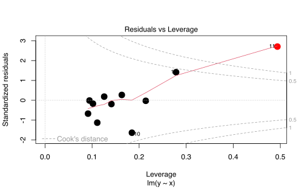
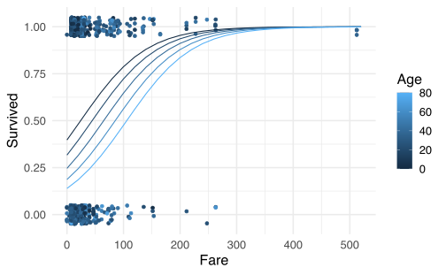
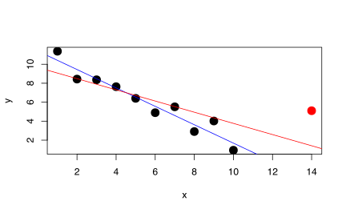

Capítulo 5 Aprendizaje estadístico
5.1 Introducción
Supongamos que tenemos \(p\) variables de entrada que mezcladas con alguna relación desconocida y que provocan una respuesta \(Y\) de salida.
\[\begin{equation} Y = f(X_{1},\ldots,X_{p}) + \varepsilon \tag{5.1} \end{equation}\]
Aquí \(f\) es deconocida, las variables \(X\)’s son las variables de entrada y \(\varepsilon\) es el error cometido por hacer esta aproximación.
Hay dos motivos para estimar \(f\)
- Predicción: Si se estima \(f\) con \(\hat{f}\) entonces \[\begin{equation*} \hat{Y} = \hat{f}(X_{1},\ldots,X_{p}). \end{equation*}\]
Y si tuvieramos valores nuevos de los \(X\)’s entonces podríamos estimar el valor que el corresponde a \(Y\).
Aquí lo importante es que los resultados sean preciso:
- Error reducible: Error de \(\hat{f}\) alrededor de \(f\).
- Error irreducible: Error propio de las observaciones (muestreo).
\[\begin{align*} \mathbb{E}\left[\hat{Y}-Y\right] &= \mathbb{E}\left[\left( f(X_{1},\ldots,X_{p}) + \varepsilon - \hat{f}(X_{1},\ldots,X_{p}) \right)^{2} \right] \\ &= \underbrace{\left( f(X_{1},\ldots,X_{p})- \hat{f}(X_{1},\ldots,X_{p}) \right) ^{2} }_{\text{Reducible}} +\underbrace{\mathrm{Var}\left(\varepsilon\right)}_{\text{irreducible}}. \end{align*}\]
- Inferencia: Entender la relación entre \(X\) y \(Y\).
- ¿Cuál es la relación entre las variables predictoras y la respuesta?
- ¿Cuáles son más importantes?
- ¿El modelo es correcto?
5.2 Regresión lineal
El caso más sencillo es cuando esta relación es lineal y se describe de la siguiente forma
\[\begin{equation*} Y = \beta_{0} + \beta_{1}X_{1} + \cdots + \beta_{1}X_{1} + \varepsilon. \end{equation*}\]
Aquí los valores \(\beta\)’s son constantes a estimar, las variables \(X\)’s son las variables de entrada y \(\varepsilon\) es el error cometido por hacer esta aproximación.
Los \(X\)’s pueden ser
- Cuantitativos o Transformaciones.
- Cualitativos.
En el caso de ser cualititativos existe un truco para incluirlos dentro de la regresión
Ejemplo 5.1 Se tiene la variable \(G\) codificada con Casado (1), Soltero (2), Divorciado (3) y Unión Libre (4). Si queremos meter esta variable en una regresión debemos tomarla de la forma
\[\begin{equation*} X_{j} = \mathbf{1}_{\{G=j+1\}} \end{equation*}\]
que resulta en la matriz
\[\begin{equation*} \begin{matrix} X_{1} & X_{2} & X_{3}\\ 0 & 0 & 0 \\ 1 & 0 & 0 \\ 0 & 1 & 0 \\ 0 & 0 & 1 \\ \end{matrix} \end{equation*}\]
Existen otras formas de codificar este tipo de variables, pero esa es la más común.
5.2.1 Forma matricial
Podemos escribir la regresión de la forma
\[\begin{equation*} \boldsymbol{Y} = \boldsymbol{X}\boldsymbol{\beta} + \boldsymbol{\varepsilon} \end{equation*}\]
donde
\[\begin{multline*} \boldsymbol{Y} = \begin{pmatrix} Y_{1} \\ \vdots \\ Y_{n} \end{pmatrix}_{n\times 1} \quad \boldsymbol{Y} = \begin{pmatrix} 1 & X_{1,1} & \cdots & X_{p,1} \\ \vdots & \vdots & \cdots & \vdots\\ 1 & X_{1,n}& \cdots & X_{p,n} \end{pmatrix}_{n\times (p+1)} \\ \boldsymbol{\varepsilon} = \begin{pmatrix} \varepsilon_{1} \\ \vdots \\ \varepsilon_{n} \end{pmatrix}_{n\times 1} \quad \boldsymbol{\beta} = \begin{pmatrix} \beta_{0} \\ \beta_{1} \\ \vdots \\ \beta_{p} \end{pmatrix}_{(p+1)\times 1} \end{multline*}\]
Suponemos que \(\mathbb{E}\left[\varepsilon_{i}\right] = 0\) y \(\mathrm{Var}\left(\varepsilon_{i}\right) = \sigma^{2}\)
La forma de resolver este problema es por minimos cuadrados. Es decir, buscamos el \(\hat{\beta}\) que cumpla lo siguiente:
\[\begin{align} \hat{\beta} &= \operatorname{argmin}_\beta (\boldsymbol{Y} - \boldsymbol{X} \boldsymbol{\beta})^{\top} (\boldsymbol{Y} - \boldsymbol{X} \boldsymbol{\beta})\\ &= \operatorname{argmin}_\beta \sum_{i=1}^n \left( Y_{i} -\beta_{0} - \sum_{j=1}^p X_{j,i} \beta_{j} \right) \tag{5.2} \end{align}\]

Suponga que \(\gamma\) es un vector cualquiera en \(\mathbb{R}^{p+1}\) y tenemos a \(V = \{\boldsymbol{X}\boldsymbol{\gamma}, \gamma \in \mathbb{R}^{p+1}\}\).
\[\begin{align*} \boldsymbol{X}\boldsymbol{\beta} &= \operatorname{Proy}_{V} \boldsymbol{Y} \end{align*}\]
Entonces dado que \[\begin{equation*} \boldsymbol{Y}-\boldsymbol{X}\boldsymbol{\beta} \perp V \\ \boldsymbol{Y}-\boldsymbol{X}\boldsymbol{\beta} \perp \boldsymbol{X}\boldsymbol{\gamma}, \forall \boldsymbol{\gamma} \in \mathbb{R}^{p+1}. \end{equation*}\]
\[\begin{align*} <\boldsymbol{X}\boldsymbol{\gamma}, \boldsymbol{Y}-\boldsymbol{X}\boldsymbol{\beta} > &= 0 \\ \boldsymbol{\gamma}^{\top}\boldsymbol{X}^{\top}(\boldsymbol{Y}-\boldsymbol{X}\boldsymbol{\beta}) &= 0 \\ \boldsymbol{\gamma}^{\top}\boldsymbol{X}^{\top}\boldsymbol{Y} &= \boldsymbol{\gamma}^{\top} \boldsymbol{X}^{\top} \boldsymbol{X}\boldsymbol{\beta} \\ \boldsymbol{X}^{\top}\boldsymbol{Y} &= \boldsymbol{X}^{\top} \boldsymbol{X}\boldsymbol{\beta} \\ \boldsymbol{\beta} &= (\boldsymbol{X}^{\top} \boldsymbol{X})^{-1} \boldsymbol{X}^{\top}\boldsymbol{Y} \end{align*}\]
Donde \(\boldsymbol{X}^{\top} \boldsymbol{X}\) debe ser invertible. Si no es así, se puede construir su inversa generalizada pero no garantiza la unicidad de los \(\beta\)’s. Es decir, puede existir \(\hat{\beta} \neq \tilde{\beta}\) tal que \(\boldsymbol{X}\boldsymbol{\hat{\beta}} = \boldsymbol{X}\boldsymbol{\tilde{\beta}}\)
En el caso de predicción tenemos que
\[\begin{align*} \hat{Y} &= X\beta \\ &= \boldsymbol{X}(\boldsymbol{X}^{\top} \boldsymbol{X})^{-1} \boldsymbol{X}^{\top}\boldsymbol{Y} \\ &= H \boldsymbol{Y} \end{align*}\]
Donde \(H\) es la matriz “techo” o “hat”. Es la proyección de Y al espacio de las columnas de \(X\).
Ejercicio 5.1 Suponga que tenemos la regresión simple
\[\begin{equation*} Y = \beta_{0} + \beta_{1}X_{1}+\varepsilon. \end{equation*}\]
Muestre que \(\beta_{0}\) y \(\beta_{1}\) son
Para el caso de la regresión simple tenemos que
\[\begin{align*} \hat{\beta}_{1}&= \frac{\sum_{i=1}^{n}\left(X_{i}-\overline{X}\right)\left(Y_{i}-\overline{Y}\right)}{\sum_{i=1}^{n}\left(X_{i}-\overline{x}\right)^{2}} \\ \hat{\beta}_{0}&= \bar{Y}-\widehat{\beta}_{1} \bar{X} \end{align*}\]
usando los siguiente métodos:
- El método de proyecciones.
- Minimizando el criterio de mínimos cuadrados. Ecuación (5.2).
5.2.2 Laboratorio
Usemos la base mtcars para los siguientes ejemplos. Toda la información de esta base se encuentra en ?mtcars.
mtcars <- within(mtcars, {
vs <- factor(vs, labels = c("V-Shape", "Straight-Line"))
am <- factor(am, labels = c("automatic", "manual"))
cyl <- factor(cyl)
gear <- factor(gear)
carb <- factor(carb)
})
head(mtcars)## mpg cyl disp hp drat wt qsec vs am
## Mazda RX4 21.0 6 160 110 3.90 2.620 16.46 V-Shape manual
## Mazda RX4 Wag 21.0 6 160 110 3.90 2.875 17.02 V-Shape manual
## Datsun 710 22.8 4 108 93 3.85 2.320 18.61 Straight-Line manual
## Hornet 4 Drive 21.4 6 258 110 3.08 3.215 19.44 Straight-Line automatic
## Hornet Sportabout 18.7 8 360 175 3.15 3.440 17.02 V-Shape automatic
## Valiant 18.1 6 225 105 2.76 3.460 20.22 Straight-Line automatic
## gear carb
## Mazda RX4 4 4
## Mazda RX4 Wag 4 4
## Datsun 710 4 1
## Hornet 4 Drive 3 1
## Hornet Sportabout 3 2
## Valiant 3 1## mpg cyl disp hp drat
## Min. :10.40 4:11 Min. : 71.1 Min. : 52.0 Min. :2.760
## 1st Qu.:15.43 6: 7 1st Qu.:120.8 1st Qu.: 96.5 1st Qu.:3.080
## Median :19.20 8:14 Median :196.3 Median :123.0 Median :3.695
## Mean :20.09 Mean :230.7 Mean :146.7 Mean :3.597
## 3rd Qu.:22.80 3rd Qu.:326.0 3rd Qu.:180.0 3rd Qu.:3.920
## Max. :33.90 Max. :472.0 Max. :335.0 Max. :4.930
## wt qsec vs am gear
## Min. :1.513 Min. :14.50 V-Shape :18 automatic:19 3:15
## 1st Qu.:2.581 1st Qu.:16.89 Straight-Line:14 manual :13 4:12
## Median :3.325 Median :17.71 5: 5
## Mean :3.217 Mean :17.85
## 3rd Qu.:3.610 3rd Qu.:18.90
## Max. :5.424 Max. :22.90
## carb
## 1: 7
## 2:10
## 3: 3
## 4:10
## 6: 1
## 8: 1Observemos las relaciones generales de las variables de esta base de datos

El objetivo es tratar la eficiencia del automovil mpg con respecto a su peso wt.
Usaremos una regresión lineal para encontrar los coeficientes.
Primero hay que construir la matriz de diseño
## [1] 2.620 2.875 2.320 3.215 3.440 3.460## [1] 21.0 21.0 22.8 21.4 18.7 18.1## [,1]
## [1,] 5.291624ggplot(data = data.frame(x = X, y = Y)) + geom_point(aes(x,
y)) + geom_line(data = dfreg, aes(x, yreg), color = "red") +
theme_minimal()
## [,1] [,2]
## [1,] 1 2.620
## [2,] 1 2.875
## [3,] 1 2.320
## [4,] 1 3.215
## [5,] 1 3.440
## [6,] 1 3.460## [1] 21.0 21.0 22.8 21.4 18.7 18.1## [,1]
## [1,] 37.285126
## [2,] -5.344472ggplot(data = data.frame(x0 = X[, 1], x1 = X[, 2],
y = Y)) + geom_point(aes(x1, y)) + geom_line(data = dfreg,
aes(x.2, yreg), color = "red") + theme_minimal()
Ojo obviamente esto se puede hacer más fácil con los siguientes comandos
##
## Call:
## lm(formula = mpg ~ -1 + wt, data = mtcars)
##
## Coefficients:
## wt
## 5.292##
## Call:
## lm(formula = mpg ~ wt, data = mtcars)
##
## Coefficients:
## (Intercept) wt
## 37.285 -5.344Suponga que queremos incluir una variable categorica como cyl (Número de cilindros). Lo que se debe hacer es convertir esta variable a dummy.
## (Intercept) cyl6 cyl8
## Mazda RX4 1 1 0
## Mazda RX4 Wag 1 1 0
## Datsun 710 1 0 0
## Hornet 4 Drive 1 1 0
## Hornet Sportabout 1 0 1
## Valiant 1 1 0## [,1]
## (Intercept) 26.663636
## cyl6 -6.920779
## cyl8 -11.563636##
## Call:
## lm(formula = mpg ~ cyl, data = mtcars)
##
## Coefficients:
## (Intercept) cyl6 cyl8
## 26.664 -6.921 -11.564## (Intercept) cyl6 cyl8
## 26.663636 -6.920779 -11.563636## (Intercept)
## 26.66364## (Intercept)
## 19.74286## (Intercept)
## 15.15.3 Propiedades estadísticas
Uno de los supuestos fundamentales de regresión lineal es que
\[\begin{equation*} \varepsilon\sim \mathcal{N}\left(0,\sigma^{2}I\right) \end{equation*}\] .
En ese caso
\[\begin{equation*} Y = X\beta + \varepsilon \sim \mathcal{N}\left(X\beta,\sigma^{2}I\right) \end{equation*}\]
Y además
\[\begin{align*} \hat{\beta} &= (X^{\top}X)^{-1}X^{\top}Y \\ &\sim \mathcal{N}\left((X^{\top}X)^{-1}X^{\top}X\beta,((X^{\top}X)^{-1}X^{\top})\sigma I ((X^{\top}X)^{-1}X^{\top})^{\top}\right) \\ &\sim \mathcal{N}\left(\beta,\sigma (X^{\top}X)^{-1}\right) \\ \end{align*}\]
Es decir, que
\[\begin{align*} \mathbb{E}\left[\hat{\beta}\right] &= \beta \\ \operatorname{Var}(\hat{\beta}) &= \sigma^{2}\left(X^{\top} X\right)^{-1} \end{align*}\]
La estimación de \(\sigma^{2}\)
\[\begin{align*} \hat{\sigma}^{2} &= \frac{1}{n-p-1} \sum_{i=1}^{n} \left( Y_{i} - \hat{Y}_{i}\right)^{2} \\ &= \frac{1}{n-p-1}\left\Vert Y - X\hat{\beta} \right\Vert^{2} \\ &= \frac{1}{n-p-1} \left\Vert Y-\operatorname{Proy}_{V}Y \right\Vert^{2} \end{align*}\]
Otra forma de verlo es \[\begin{align*} Y-\operatorname{Proy}_{V}Y &= X\beta + \varepsilon - \operatorname{Proy}_{V}( X\beta + \varepsilon) \\ &= X\beta - \operatorname{Proy}_{V}( \underbrace{X\beta}_{\in V}) + \varepsilon - \underbrace{\operatorname{Proy}_{V}( \varepsilon)}_{=0} \\ &= X\beta -X\beta + \varepsilon \\ &= \operatorname{Proy}_{V^{\top}}( \varepsilon) \end{align*}\]
\[\begin{equation*} \hat{\sigma}^{2} = \frac{1}{dim(V^{\top})}\left\Vert \operatorname{Proy}_{V^{\top}}\varepsilon\right\Vert \\ \end{equation*}\]
Cumple con la propiedad que \(\mathbb{E}\left[\hat{\sigma}^{}\right] = \sigma^{2}\).
Y además \((n-p-1)\hat{\sigma}^{2} \sim \sigma^{2} \chi^{2}_{n-p-1}.\)
5.3.1 Prueba \(t\)
Dado que los coeficientes \(\beta\) son normales, se puede hacer la prueba de hipotesis
\[\begin{equation*} H_{0}: \beta_{j} = 0 \quad \text{ vs } \quad H_{1}:\beta_{j}\neq 0. \end{equation*}\]
El estadístico es
\[\begin{equation*} z_{j} = \frac{\hat{\beta}_{j}}{\hat{\sigma} \sqrt{v_{j}}} \end{equation*}\]
donde \(v_{j}\) es el \(j\)-esimo elemento de la diagonal de \((X^{\top}X)^{-1}\).
Bajo \(H_{0}\) \(z_{j} \sim t_{n-p-1}\) y se rechaza \(H_{0}\) si
\[\begin{equation*} \left\vert z_{j} \right\vert > t_{n-p-1, 1-\frac{\alpha}{2}} \end{equation*}\]
5.3.2 Prueba \(F\)
\[\begin{equation*} H_{0}: \beta_{1} = \cdots =\beta_{p} = 0 \quad \text{ vs }\quad H_{1}: \text{ al menos un \(\beta\) no es cero}. \end{equation*}\]
En este caso queremos comparar el modelo nulo \(Y=\beta_{0}+\varepsilon\) contra el modelo completo \(Y=\beta_{0}+ \beta_{1}X_{1} + \cdots + \beta_{p}X_{p} + \varepsilon\).
Defina
\[\begin{align*} TSS &= \sum_{i=1}^{n} \left( Y_{i} -\overline{Y} \right)^{2} \\ RSS &= \sum_{i=1}^{n} \left( Y_{i} -\overline{Y} \right)^{2} \\ \end{align*}\]
TSS = Total sum of squares
RSS = Residual sum of squares
Entonces
\[\begin{equation*} F = \frac{\frac{TSS-RSS}{p}}{\frac{RSS}{n-p-1}} \sim \frac{\chi^{2}_{p}}{\chi^{2}_{n-p-1}}. \end{equation*}\]
Rechazamos \(H_{0}\) si
\[\begin{equation*} F > F_{p, n-p-1, 1-\alpha}. \end{equation*}\]
5.3.3 Laboratorio
Siguiendo con nuestro ejemplo, vamos a explorar un poco más la función lm.
##
## Call:
## lm(formula = mpg ~ wt, data = mtcars)
##
## Residuals:
## Min 1Q Median 3Q Max
## -4.5432 -2.3647 -0.1252 1.4096 6.8727
##
## Coefficients:
## Estimate Std. Error t value Pr(>|t|)
## (Intercept) 37.2851 1.8776 19.858 < 2e-16 ***
## wt -5.3445 0.5591 -9.559 1.29e-10 ***
## ---
## Signif. codes: 0 '***' 0.001 '**' 0.01 '*' 0.05 '.' 0.1 ' ' 1
##
## Residual standard error: 3.046 on 30 degrees of freedom
## Multiple R-squared: 0.7528, Adjusted R-squared: 0.7446
## F-statistic: 91.38 on 1 and 30 DF, p-value: 1.294e-10##
## Call:
## lm(formula = mpg ~ wt + cyl, data = mtcars)
##
## Residuals:
## Min 1Q Median 3Q Max
## -4.5890 -1.2357 -0.5159 1.3845 5.7915
##
## Coefficients:
## Estimate Std. Error t value Pr(>|t|)
## (Intercept) 33.9908 1.8878 18.006 < 2e-16 ***
## wt -3.2056 0.7539 -4.252 0.000213 ***
## cyl6 -4.2556 1.3861 -3.070 0.004718 **
## cyl8 -6.0709 1.6523 -3.674 0.000999 ***
## ---
## Signif. codes: 0 '***' 0.001 '**' 0.01 '*' 0.05 '.' 0.1 ' ' 1
##
## Residual standard error: 2.557 on 28 degrees of freedom
## Multiple R-squared: 0.8374, Adjusted R-squared: 0.82
## F-statistic: 48.08 on 3 and 28 DF, p-value: 3.594e-11##
## Call:
## lm(formula = mpg ~ ., data = mtcars)
##
## Residuals:
## Min 1Q Median 3Q Max
## -3.5087 -1.3584 -0.0948 0.7745 4.6251
##
## Coefficients:
## Estimate Std. Error t value Pr(>|t|)
## (Intercept) 23.87913 20.06582 1.190 0.2525
## cyl6 -2.64870 3.04089 -0.871 0.3975
## cyl8 -0.33616 7.15954 -0.047 0.9632
## disp 0.03555 0.03190 1.114 0.2827
## hp -0.07051 0.03943 -1.788 0.0939 .
## drat 1.18283 2.48348 0.476 0.6407
## wt -4.52978 2.53875 -1.784 0.0946 .
## qsec 0.36784 0.93540 0.393 0.6997
## vsStraight-Line 1.93085 2.87126 0.672 0.5115
## ammanual 1.21212 3.21355 0.377 0.7113
## gear4 1.11435 3.79952 0.293 0.7733
## gear5 2.52840 3.73636 0.677 0.5089
## carb2 -0.97935 2.31797 -0.423 0.6787
## carb3 2.99964 4.29355 0.699 0.4955
## carb4 1.09142 4.44962 0.245 0.8096
## carb6 4.47757 6.38406 0.701 0.4938
## carb8 7.25041 8.36057 0.867 0.3995
## ---
## Signif. codes: 0 '***' 0.001 '**' 0.01 '*' 0.05 '.' 0.1 ' ' 1
##
## Residual standard error: 2.833 on 15 degrees of freedom
## Multiple R-squared: 0.8931, Adjusted R-squared: 0.779
## F-statistic: 7.83 on 16 and 15 DF, p-value: 0.0001245.4 Predicción
Hay dos tipos de errores que se deben considerar en regresones lineales:
- Error Reducible: Recuerde que \(\hat{Y} = \hat{X}\hat{\beta}\) es el estimador de la función \(f(X)=X\beta = \beta_{0} + \beta_{1}X_{1}+\cdots+\beta_{p}X_{p}\).
Por lo tanto su error (reducible) es:
\[\begin{equation*} \left( f(X) - \hat{Y}\right) ^{2}. \end{equation*}\]
Para un conjunto de datos \(X_{0}\), tenemos que
\[\begin{align*} & \hat{\beta} \sim \mathcal{N}\left(\beta, \sigma^{2}\left( (X_{0}^{\top}X_{0})^{-1} \right)\right) \\ \implies & \hat{Y} = \hat{X_{0}}\hat{\beta} \sim \mathcal{N}\left(\hat{X_{0}}\beta , \sigma^{2}X_{0}^{\top}((X_{0}^{\top}X_{0})^{-1}X_{0} \right) \end{align*}\]
Por lo tanto un intervalo de confianza al \(1-\alpha\) para \(X\beta\) es
\[\begin{equation*} X_{0}\beta \pm z_{1-\frac{\alpha}{2}} \hat{\sigma} \sqrt{X_{0}^{\top}(X_{0}^{\top}X_{0})^{-1}X_{0}}. \end{equation*}\]
- Error irreducible: Aún conociendo perfectamente los \(\beta\)’s, existe el error desconocido \(\varepsilon\sim \mathcal{N}\left(0,\sigma^{2}\right)\) del modelo
\[\begin{equation*} Y = X\beta + \varepsilon. \end{equation*}\]
Entonces la varianza total de la predicción sería
\[\begin{equation*} \sigma^{2} + \sigma^{2}X_{0}^{\top}( (X_{0}^{\top}X_{0})^{-1}X_{0} \end{equation*}\]
Entonces un intervalo de predicción al \(1-\alpha\) debe tomar en cuenta ese error y por lo tanto
\[\begin{equation*} X_{0}\beta \pm z_{1-\frac{\alpha}{2}} \hat{\sigma} \sqrt{1+X_{0}^{\top}(X_{0}^{\top}X_{0})^{-1}X_{0}}. \end{equation*}\]
Resumiendo
- Intervalo de confianza: es la incertidumbre que existe alrededor de la línea de regresión.
- Intervalo de predicción: es la incertidumbre que existe alrededor del proceso general que generararon los datos bajo el supuesto de linealidad.
5.4.1 Laboratorio
## [1] 1.513 5.424## wt
## 1 2.5
## 2 3.0
## 3 3.5## fit lwr upr
## 1 23.92395 22.55284 25.29506
## 2 21.25171 20.12444 22.37899
## 3 18.57948 17.43342 19.72553## fit lwr upr
## 1 23.92395 17.55411 30.29378
## 2 21.25171 14.92987 27.57355
## 3 18.57948 12.25426 24.904695.4.1.1 Ajuste de la regresión sin intervalos de confianza
p <- ggplot(mtcars, aes(x = wt, y = mpg))
p <- p + geom_point(size = 2) # Use circulos de tamaño 2
p <- p + geom_smooth(method = lm, # Agregar la línea de regresión
se = FALSE, # NO incluir el intervalo de confianza
size = 1,
col = "red") # Línea de color rojo
p <- p + theme_bw() # Tema de fondo blanco
p <- p + theme(axis.text = element_text(size = 20), # Aumentar el tamaño
axis.title = element_text(size = 20)) # de letra en los ejes
# Dibujar el gráfico
p
# # Guardar el gráfico en un archivo pdf
# ggsave(filename = 'linear_reg_sin_IC.pdf') # 
5.4.1.2 Ajuste de la regresión con intervalos de confianza
p <- ggplot(mtcars, aes(x = wt, y = mpg))
p <- p + geom_point(size = 2) # Use circulos de tamaño 2
p <- p + geom_smooth(method = lm, # Agregar la línea de regresión
se = TRUE, # Incluir el intervalo de confianza
size = 1,
col = "red") # Línea de color rojo
p <- p + theme_bw() # Tema de fondo blanco
p <- p + theme(axis.text = element_text(size = 20), # Aumentar el tamaño
axis.title = element_text(size = 20)) # de letra en los ejes
# Dibujar el gráfico
p
# # Guardar el gráfico en un archivo pdf
# ggsave(filename = 'linear_reg_con_IC.pdf') # 
5.4.1.3 Ajuste de la regresión con intervalos de confianza y predicción
# Agregamos a mtcars el intervalo de predicción
# para cada dato
mtcars.pred <- data.frame(mtcars, predict(lm.r, interval = "prediction"))
p <- ggplot(mtcars.pred, aes(x = wt, y = mpg))
# Use circulos de tamaño 2
p <- p + geom_point(size = 2)
# Agregue una banda de tamaño [lwr, upr] para cada
# punto y llamela 'predicción'
p <- p + geom_ribbon(aes(ymin = lwr, ymax = upr, fill = "predicción"),
alpha = 0.3)
# Agregue el intervalo de confianza usual y llame a
# ese intervalo 'confianza'
p <- p + geom_smooth(method = lm, aes(fill = "confianza"),
size = 1, col = "red")
# Para agregar bien las leyendas
p <- p + scale_fill_manual("Intervalos", values = c("green",
"yellow"))
p <- p + theme_bw()
p <- p + theme(axis.text = element_text(size = 20),
axis.title = element_text(size = 20))
# Dibujar el gráfico
p
# # Guardar el gráfico en un archivo pdf
# ggsave(filename = 'linear_reg_con_IC_IP.pdf') #
Repitamos el mismo ejercicio anterior pero con un caso más sencillo.
n <- 1000
X <- runif(n, 0, 10)
Y <- 10 + sin(5 * X) + X + rnorm(1000, 0, 1)
toyex.initial <- data.frame(X, Y) %>% arrange(X)
plot(toyex.initial)
##
## Call:
## lm(formula = Y ~ X, data = toyex.initial)
##
## Residuals:
## Min 1Q Median 3Q Max
## -3.2880 -0.8153 -0.0376 0.8524 3.5583
##
## Coefficients:
## Estimate Std. Error t value Pr(>|t|)
## (Intercept) 10.10758 0.07618 132.68 <2e-16 ***
## X 0.96756 0.01353 71.54 <2e-16 ***
## ---
## Signif. codes: 0 '***' 0.001 '**' 0.01 '*' 0.05 '.' 0.1 ' ' 1
##
## Residual standard error: 1.213 on 998 degrees of freedom
## Multiple R-squared: 0.8368, Adjusted R-squared: 0.8366
## F-statistic: 5118 on 1 and 998 DF, p-value: < 2.2e-16Ahora, quisiera generar muchas muestras del mismo experimento
toyex.pred <- NULL
for (i in 1:10) {
X <- runif(n, 0, 10)
Y <- 10 + sin(5 * X) + X + rnorm(1000, 0, 1)
toyexi <- data.frame(im = i, X, Y)
toyexi <- toyexi %>% arrange(X)
toyex.pred <- bind_rows(toyex.pred, data.frame(toyexi,
predict(lm.toyex.initial, interval = "prediction")))
}
for (i in 1:10) {
toyex.pred$fit <- fitted(lm(formula = Y ~ X, data = toyex.pred[toyex.pred$im ==
i, ]))
}
toyex.pred$im <- as.factor(toyex.pred$im)library(gganimate)
ggplot(data = toyex.pred, aes(x = X, y = Y)) + geom_point(size = 1) +
geom_smooth(data = toyex.initial, method = lm,
mapping = aes(fill = "confianza"), size = 1,
col = "red") + geom_ribbon(data = toyex.pred.initial,
mapping = aes(x = X, ymin = lwr, ymax = upr, fill = "predicción",
), alpha = 0.3) + labs(title = paste0("Muestra #: {closest_state}")) +
scale_fill_manual("Intervalos", values = c("green",
"yellow")) + theme_bw() + theme(axis.text = element_text(size = 20),
axis.title = element_text(size = 20)) + transition_states(im)5.5 Interacciones
En el modelo clásico
\[\begin{equation*} Y = \beta_{0} + \beta_{1} X_{1} + \beta_{2} X_{2} + \varepsilon \end{equation*}\]
Aumentemos en 1 unidad \(X_{1}\) y rescribamos el modelo original
\[\begin{align*} Y &= \beta_{0} + \beta_{1} (X_{1}+1) + \beta_{2} X_{2} + \varepsilon \\ Y &= (\beta_{0} + \beta_{1}) + \beta_{1} X_{1} + \beta_{2} X_{2} + \varepsilon \\ Y &= \tilde{\beta_{0}} + \beta_{1} X_{1} + \beta_{2} X_{2} + \varepsilon \\ \end{align*}\]
Es decir, el modelo original sigue siendo el mismo aunque hayamos cambiado el \(X_1\). Este fenómeno ocurre siempre bajo transformaciones lineales de las variables.
Ahora suponga que tenemos el siguiente modelo y aumentamos en 1 el \(X_1\)
\[\begin{align*} Y &= \beta_{0} + \tilde{\beta_{1}} X_{1} X_{2} +\varepsilon \\ \implies Y &= \beta_{0} + \beta_{1} (X_{1}+1) X_{2} +\varepsilon \\ \implies Y &= \beta_{0} + \beta_{1}X_{2} + \beta_{1} X_{1} X_{2} +\varepsilon \\ \end{align*}\]
OJO. Terminamos con un modelo diferente con el que empezamos. Esto es indeseable ya que no hay consistencia en la modelación,
Una forma de arreglar el problema es incluir las interacciones junto con todos sus efectos directos.
\[\begin{equation*} Y = \beta_{0} + \beta_{1}X_{1} + \beta_{2} X_{2} + \beta_{3} X_{1} X_{2} +\varepsilon \\ \end{equation*}\]
5.5.1 Laboratorio
##
## Call:
## lm(formula = mpg ~ wt + disp, data = mtcars)
##
## Residuals:
## Min 1Q Median 3Q Max
## -3.4087 -2.3243 -0.7683 1.7721 6.3484
##
## Coefficients:
## Estimate Std. Error t value Pr(>|t|)
## (Intercept) 34.96055 2.16454 16.151 4.91e-16 ***
## wt -3.35082 1.16413 -2.878 0.00743 **
## disp -0.01773 0.00919 -1.929 0.06362 .
## ---
## Signif. codes: 0 '***' 0.001 '**' 0.01 '*' 0.05 '.' 0.1 ' ' 1
##
## Residual standard error: 2.917 on 29 degrees of freedom
## Multiple R-squared: 0.7809, Adjusted R-squared: 0.7658
## F-statistic: 51.69 on 2 and 29 DF, p-value: 2.744e-10##
## Call:
## lm(formula = mpg ~ wt + disp + wt * disp, data = mtcars)
##
## Residuals:
## Min 1Q Median 3Q Max
## -3.267 -1.677 -0.836 1.351 5.017
##
## Coefficients:
## Estimate Std. Error t value Pr(>|t|)
## (Intercept) 44.081998 3.123063 14.115 2.96e-14 ***
## wt -6.495680 1.313383 -4.946 3.22e-05 ***
## disp -0.056358 0.013239 -4.257 0.00021 ***
## wt:disp 0.011705 0.003255 3.596 0.00123 **
## ---
## Signif. codes: 0 '***' 0.001 '**' 0.01 '*' 0.05 '.' 0.1 ' ' 1
##
## Residual standard error: 2.455 on 28 degrees of freedom
## Multiple R-squared: 0.8501, Adjusted R-squared: 0.8341
## F-statistic: 52.95 on 3 and 28 DF, p-value: 1.158e-11##
## Call:
## lm(formula = mpg ~ wt * disp - wt - disp, data = mtcars)
##
## Residuals:
## Min 1Q Median 3Q Max
## -4.259 -2.603 -1.657 2.165 8.589
##
## Coefficients:
## Estimate Std. Error t value Pr(>|t|)
## (Intercept) 26.2621926 1.0418029 25.208 < 2e-16 ***
## wt:disp -0.0072897 0.0009721 -7.499 2.33e-08 ***
## ---
## Signif. codes: 0 '***' 0.001 '**' 0.01 '*' 0.05 '.' 0.1 ' ' 1
##
## Residual standard error: 3.614 on 30 degrees of freedom
## Multiple R-squared: 0.6521, Adjusted R-squared: 0.6405
## F-statistic: 56.24 on 1 and 30 DF, p-value: 2.329e-085.6 Posibles problemas en los supuestos para regresion lineal
5.6.1 No linealidad de los datos
Este supuesto se puede constatar a partir de un gráfico de residuos ya que en el caso ideal \(e_{i} = \hat{Y}_{i}- Y_{i} \perp \hat{Y}_{i}\). Entonces si este gráfico presenta patrones, se pueden aplicar transformaciones para hacerlos perpendiculares.
Albert, Jim, Robert Gentleman, Giovanni Parmigiani, and Kurt Hornik. 2009. Bayesian computation with R. New York, NY: Springer New York. https://doi.org/10.1007/978-0-387-92298-0.
Hall, Peter. 1987. “On Kullback-Leibler Loss and Density Estimation.” The Annals of Statistics 15 (4): 1491–1519. https://doi.org/10.1214/aos/1176350606.
Härdle, Wolfgang, Axel Werwatz, Marlene Müller, and Stefan Sperlich. 2004. Nonparametric and Semiparametric Models. Springer Series in Statistics. Berlin, Heidelberg: Springer Berlin Heidelberg. https://doi.org/10.1007/978-3-642-17146-8.
Hoffman, Matthew D., and Andrew Gelman. 2014. “The no-U-turn sampler: Adaptively setting path lengths in Hamiltonian Monte Carlo.” Journal of Machine Learning Research 15 (47): 1593–1623. http://jmlr.org/papers/v15/hoffman14a.html.
Kruschke, John K. 2014. “Doing Bayesian data analysis: A tutorial with R, JAGS, and Stan, second edition.” In Doing Bayesian Data Analysis: A Tutorial with R, Jags, and Stan, Second Edition, 1–759.
Wasserman, Larry. 2006. All of Nonparametric Statistics. Springer Texts in Statistics. New York, NY: Springer New York. https://doi.org/10.1007/0-387-30623-4.